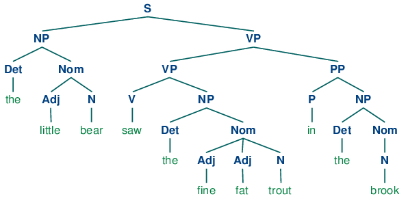

This course introduces the interdisciplinary field of cognitive science. Lectures and readings
will survey research from artificial intelligence, psychology, linguistics, philosophy, and neuroscience, and will
cover topics such as the nature of knowledge, thinking, remembering, vision, imagery, language, and consciousness.
Took notes on this class purely out of interest in cognitive science, selectively went through 11 out of all 16
lectures.
Introduction to Cognitive Science
- focus is on the cognitive science of language
- language is central to our mental and social lives: your thoughts, memories, memes, religious texts,
scientific facts, literature
- cognitive science is the interdisciplinary study of mind and intelligence
- cognitive science draws upon: anthropology, artificial intelligence, education, linguistics, neuroscience,
philosophy, and psychology
- is language acquisition based on experience-based training (like how we learn to skateboard) or
development of innate cognitive module with rules (how our heart develops) [Noam Chomsky]
- structure of language - recursion, VP (verb phrase), that-clauses (S-bars), NP (noun phrase),
PPs (prepositional phrases)
- create infinitely novel sentences in a rule-governed way

- thinking also occurs in a mental language
- the 3 levels at which any machine carrying out an information-processing task must be understood (from an
evolutionary and philosophical approach)
- computational theory - what is the goal, why is it appropriate, what is the logic of the
strategy
- representation and algorithm - how can this computational theory be implemented? what is
the representation for the input and output, what is the algorithm
- hardware implementation - how can representation and algorithm be realized physically
flight (computation - why) is possible by flapping (algorithm - what) which comes from feathers
(implementation - how)
Nativism, Empiricism, and Core Knowledge
- nativism - knowledge is due to intrinsic properties of human's perceptual and cognitive systems
- empiricism - knowledge is due to experience-based learning from the environment
- knowledge exists on a spectrum of wholly shaped by encounters with objects to wholly independent of
encounters with objects
- the ideas are distributed at a young age by the infants
- several forms of core knowledge in humans and non-human animals: intuitive physics (understanding physical
objects and finding them when hidden), biological motion (preferred over non biological motion), geometry
(ability to understand and discriminate where we are standing), faces (face-like stimuli is preferred, we'll
turn images that don't look like faces into faces)
Introductory Neuroscience
- magnetic resonance imaging (MRI) - method used to take pictures of the brain's anatomical
structure
- electroencephalography (EEG) - method used to measure electrical activity produced by neurons
in the brain during different cognitive tasks
- functional magnetic resonance imaging (fMRI) - method used to measure blood flow in the brain
during different cognitive tasks
- transcranial magnetic stimulation (TMS) - method used to apply magnetic pulses to stimulate
nerve cells in areas of the brain
- depending on the nature or purpose of your study, need to select a better method (think about spatial vs
temporal resolution)
- neurons - nerve cells that are fundamental units of the brain and nervous system
- soma - cell body of a neuron includes the nucleus, which contains the genetic material of the
cell
- dendrites - receive information from other neurons and conveys it into the soma
- axon - carries information away from the soma to the other end of the neuron and then on to
other neurons
- myelin sheath - layer of fatty tissue that covers the axon and helps speed up the transmission
of information
- neurons rely on both electrical impulses and chemical messages to convey information
- action potential - change in membrane potential that travels down the axon in all or nothing
manner
- when neuron fires, it releases neurotransmitters which are chemicals that are capable of attaching to a
particular receptor sites of receiving neurons and activating them
- agonist - substance that binds to a receptor and triggers a response that mimics or enhances a
neurotransmitter's effect
- antagonist - substance that binds to a receptor and triggers a response that blocks a
neurotransmitter's effect
- central nervous system - includes the brain and spinal cord
- peripheral nervous system - includes the nerves and ganglia located outside the brain and
spinal cord
- neurotransmitters: dopamine, seratonin, glutamate (critical roles in learning and memory)
- hormones: cortisol, epinephrine/adrenaline, oxytocin
- brain is divided into 3 sections: hindbrain (basic processes needed for survival - cerebellum, pons, medula), midbrain (network of neurons that maintains consciousness, dopamine transmitter), forebrain (emotional, cognitive, behavioral processes - limbic system, hypothalamus, thalamus, cerebral cortex)
- occipital lobe (visual cortex), temporal lobe (auditory cortex), parietal lobe (somatosensory lobe), frontal lobe (motor cortex)
- left hemisphere controls right side of the body, right hemisphere controls left side of the body